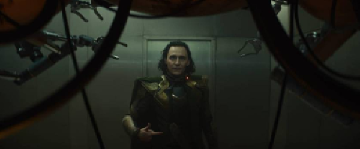
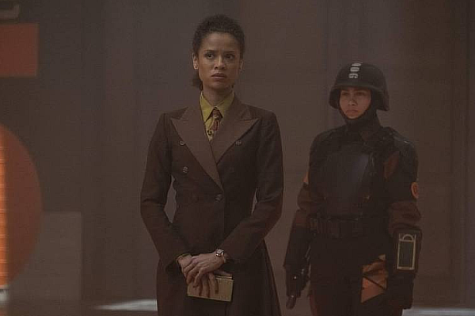
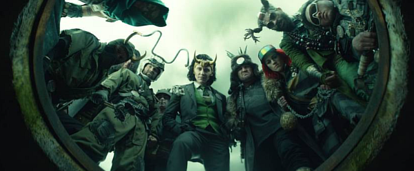

Primeira temporada de loki
A primeira temporada de Loki foi finalizada hoje (14), com o lançamento do sexto episódio pelo Disney+. Antes de qualquer coisa,
a boa notícia: a produção da Marvel já está renovada para o segundo ano!
Isso significa, no entanto, que estar a par do que rolou nestes episódios de estreia se tornou mais importante do que nunca...
Mas não se preocupe, porque o Omelete resolveu te ajudar com um apanhadão de tudo o que tivemos de mais legal nos seis episódios de Loki
- vem com a gente.
LOKI CHEGA À AVT

O capítulo, em si, mostrou a série
acomodada em um ritmo de "CSI com super-poderes",
com Loki ajudando a AVT a perseguir a sua variante encrenqueira,
a quem fomos (finalmente)
apresentados no final do capítulo - na pele de Sophia Di Martino,
ela logo foi comparada pelos fãs
com a Lady Loki dos quadrinhos.
Entre os muitos easter eggs do capítulo, destaque para a viagem
de Loki e Mobius a Pompeia,
um desastre natural verdadeiro que já
surgiu várias vezes na cultura pop. Ah, e na segunda semana da série teve também
"homenagem" de Ana Maria Braga ao vilão da Marvel!
A perseguição começa

Um pouco antes da estreia do segundo episódio de Loki, Tom Hiddleston deu uma
entrevista exclusiva ao Omelete,
em que refletiu sobre a
trajetória do personagem, que "mudou sua vida".
O capítulo, em si, mostrou a série acomodada
em um ritmo de "CSI com super-poderes",
com Loki ajudando a AVT a perseguir a sua
variante encrenqueira, a quem fomos (finalmente)
apresentados no final do capítulo
- na pele de Sophia Di Martino, ela logo foi comparada pelos fãs com a Lady Loki dos quadrinhos
.
Entre os muitos easter eggs do capítulo, destaque
para a viagem de Loki e Mobius a Pompeia,
um desastre natural verdadeiro que já
surgiu várias vezes na cultura pop. Ah, e na segunda semana da série teve também
"homenagem" de Ana Maria Braga ao vilão da Marvel!
O PASSEIO POR LAMENTIS

Fugidos da AVT, Loki e Sylvie (o nome da "nossa" versão da Lady Loki) se escondem no planeta Lamentis,
que está passando por um evento apocalíptico. Tentando escapar, eles conhecem melhor um ao outro,
e até têm uma conversa que confirma, depois de anos de especulação, que o Loki do MCU é bissexual
A revelação segue o cânone dos quadrinhos,
como explicamos por aqui, e ainda carrega importância
enorme como representatividade LGBTQIA+,
e especificamente bissexual,
em uma das maiores franquias da atualidade - veja nossa análise disso
tudo.Ao todo, o episódio é dono de alguns dos melhores diálogos e
momentos mais divertidos que a Marvel já produziu, e a interação
entre Loki e Sylvie conquistou o coração dos fãs com facilidade.
CAPTURADOS

O quarto episódio foi o primeiro em que Loki usou um recurso querido da Marvel
a cena pós-créditos. Aqui, víamos o protagonista
se encontrando com três outras
variantes de si mesmo no Vazio, para onde
são mandadas as variantes "podadas"
pela AVT - explicamos tudo sobre as variantes aqui.
O CAOS DAS VARIANTES

O penúltimo episódio de Loki concentrou mais energia caótica e cenas de ação que todos os outros combinados,
mostrando as desventuras do protagonista no Vazio, uma paisagem apocalíptica povoada por várias variantes dele mesmo.
Foi um capítulo recheadíssimo de easter eggs, claro.
As muitas versões de Loki conquistaram o coração do público, especialmente
o Loki Clássico, interpretado por Richard E. Grant, que teve papel importante no clímax do episódio ao ajudar nossos heróis
a combaterem o gigante Alioth, outro personagem introduzido pela série com uma longa história nas HQs.
"Jornada ao Mistério" foi mesmo uma fonte inesgotável de detalhes e easter eggs,
porque por aqui nós ainda explicamos a história do "presidente Loki" e demos risada quando soubemos que Chris Hemsworth dublou o "sapo Thor".
UM FINAL SURPREENDENTE